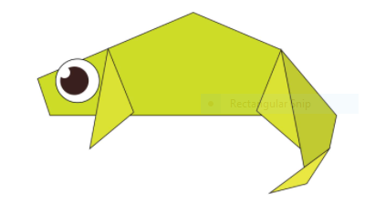
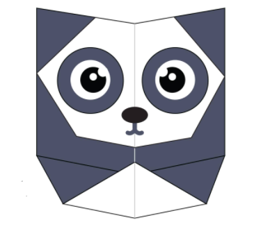

ORIGAMI ANIMALS:-
1. CAMEL:-

A camel is an even-toed ungulate in the genusCamelus that bears distinctive fatty deposits known as "humps" on its back. Camels have long been domesticated and, as livestock, they provide food and textiles.There are two types of camels: One humped or “dromedary” camels and two humped Bactrian camels.Camels have three sets of eyelids and two rows of eyelashes to keep sand out of their eyes.Camels have thick lips which let them forage for thorny plants other animals can't eat.
2. CHAMELEON:-

Chameleons or chamaeleons are a distinctive and highly specialized clade of Old World lizards with 202 species described as of June 2015. These species come in a range of colors, and many species have the ability to change color.Their feet work like salad tongs.Almost half of the known species live in Madagascar.They mainly change colour in order to communicate or regulate body temperature. Skin crystals enable them to change colour at will. Unlike many lizards, chameleons can't regrow their tails.
3. PIGEON:-

Columbidae is a bird family consisting of pigeons and doves. It is the only family in the order Columbiformes. These are stout-bodied birds with short necks, and short slender bills that in some species feature fleshy ceres. They primarily feed on seeds, fruits, and plants.Pigeons are incredibly complex and intelligent animals. They are one of only a small number of species to pass the ‘mirror test’ – a test of self recognition. They can also recognise each letter of the human alphabet, differentiate between photographs, and even distinguish different humans within a photograph.Pigeons are renowned for their outstanding navigational abilities.Pigeons are highly sociable animals.
4. TEDDY BEAR:-

A teddy bear is a stuffed toy in the form of a bear.It was developed apparently simultaneously by toymakers Morris Michtom in the U.S. and Richard Steiff in Germany in the early years of the 20th century.Teddy bears got their name from the story that Teddy Roosevelt refused to shoot a bear cub while on a hunting trip in 1902.The Oxford English Dictionary dates the first use of the term teddy bear to 1906.Washable teddy bears didn't appear until 1954 when the stuffing was switched to an easier to clean nylon fill. Before that, they were stuffed with mohair, wool, and other hard to clean fills.The world's smallest stitched teddy bear is a mere 0.29 inches tall! It was created by South African artist Cheryl Moss who is known for her minuscule work. The world's largest stitched teddy bear is proudly American! The 55-foot-4 creation was made in 2008 and is named C.T.Dreams, which stands for Connect the Dreams. You can go visit it in Wichita, Kansas!
5. PANDA:-

The giant panda, also known as the panda bear or simply the panda, is a bear native to south central China. It is characterised by large, black patches around its eyes, over the ears, and across its round body. The name "giant panda" is sometimes used to distinguish it from the red panda, a neighboring musteloid.Giant pandas are good at climbing trees and can also swim.Pandas go from pink to white and black (or brown).Pandas are "lazy" — eating and sleeping make their day.An adult can eat 12–38 kilos of bamboo per day!Pandas have carnivorous teeth, but they eat bamboo and fruit.Pandas have a 6th "digit" on the heels of their fore-paws.Fossils of pandas have been dated between 1 and 2 million years old. Once pandas were widely distributed across the whole of China. Now they only live in the wild in remote areas of China's Tibetan foothills.
6. FLYING CICADA:-
The cicadas are a superfamily, the Cicadoidea, of insects in the order Hemiptera. They are in the suborder Auchenorrhyncha, along with smaller jumping bugs such as leafhoppers and froghoppers.There are around 3,000 cicada species, according to National Geographic, so they vary in size from 0.75 to 2.25 in (2.2 to 5.5 cm) long. Cicadas can be black, brown or green and can have red, white or blue eyes. Their wings are transparent and can seem rainbow-hued when held up to a light source.Cicadas can live a relatively long time: 4 to 17 years, depending on whether they are annual or periodical cicadas. The periodical cicadas live the longest.Cicadas are herbivores. This means they eat vegetation. Young cicadas eat liquid from plant roots, while molting cicadas eat twigs. Adult cicadas do not feed.The most prominent and best-studied cicadas are six periodical species belonging to the genus Magicicada.Three species have 13-year cycles, and three have 17-year cycles.